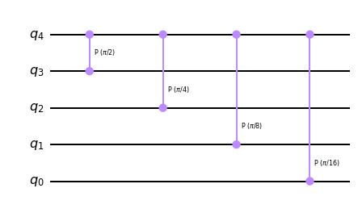
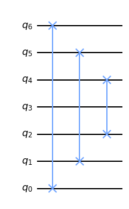
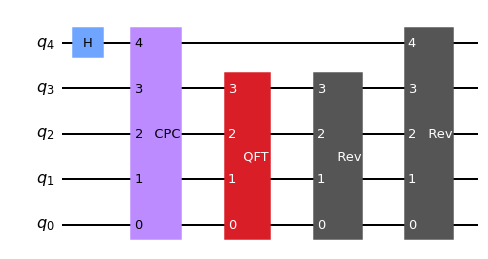
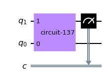

from qiskit import QuantumCircuit
from qiskit.quantum_info import Statevector
from math import pidef cpc(n):
qc = QuantumCircuit(n, name=' CPC')
for k in range(1, n):
qc.cp(pi/(2**k), n-1, n-1-k)
return qc
cpc(5).draw(output='mpl', reverse_bits=True)
def rev(n):
qc = QuantumCircuit(n, name=' Rev')
for i in range(n//2):
qc.swap(i, n-i-1)
return qc
rev(7).draw(output='mpl', reverse_bits=True)
def qft(n):
qc = QuantumCircuit(n, name=f' QFT')
qc.h(n-1)
if n == 1:
return qc
qc.append(cpc(n), range(n))
qc.append(qft(n-1), range(n-1))
qc.append(rev(n-1), range(n-1))
qc.append(rev(n), range(n))
return qc
qft(5).draw(output='mpl', reverse_bits=True, style={
"displaycolor": {
" Rev": [ # gate name
"#555555", # box color (grey)
"#FFFFFF" # box text color (white)
],
" QFT": [ # gate name
"#da1e28", # box color (red)
"#FFFFFF" # box text color (white)
],
}})
from qiskit import Aer, execute, transpile
# Run the quantum circuit on a statevector simulator backend
#backend = Aer.get_backend('statevector_simulator')
# create circuit with measurement
n = 2
circ = QuantumCircuit(n, n-1)
qc = QuantumCircuit(n)
# qc.y(0)
circ.append(qc, range(n))
circ.measure(range(1,n), range(n-1))
circ.draw(output='mpl', reverse_bits=True)
from qiskit import Aer, transpile, QuantumCircuit
circ = QuantumCircuit(2)
circ.h(0)
circ.measure_all()
# Transpile for simulator
simulator = Aer.get_backend('aer_simulator')
circ = transpile(circ, simulator)
# Run and get counts
result = simulator.run(circ).result()
counts = result.get_counts(circ)
print(counts)import qiskit.tools.jupyter
%qiskit_version_tableVersion Information
| Qiskit Software | Version |
|---|---|
qiskit-terra | 0.22.3 |
qiskit-aer | 0.11.2 |
qiskit-ibmq-provider | 0.19.2 |
qiskit | 0.39.3 |
| System information | |
| Python version | 3.9.12 |
| Python compiler | Clang 12.0.0 |
| Python build | main, Apr 5 2022 01:53:17 |
| OS | Darwin |
| CPUs | 8 |
| Memory (Gb) | 8.0 |
| Mon Dec 12 12:27:38 2022 MST | |